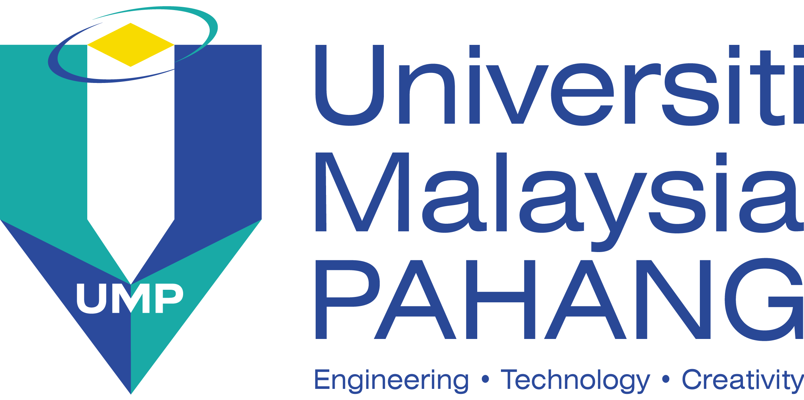

LUTFIR RAHMAN BIN ERIZAL
NO. 2, LORONG KUNCHI AIR MATI
KAMPUNG BAHAGIA
36000 TELUK INTAN, PERAK
Tel: (Home) 056212223 / (H/P) 01137371926
E-mail: lutfirrahman0625@gmail.com
Skills
Tecnical Skills
Expertise in Engineering Software:
- MATLAB
- Solid work & AutoCAD
- TinkerCAD
- Multisim
- Microsoft Office
- CNC Simulator
- Visual Studio Code
Expertise in Programming Language:
- C/C++
- Python
- HTML,PHP,CSS
- JavaScript
Soft Skills
- Team Working Skill
- Assistant Technician(Jan-Mar 2019)
- 1. Assist senior technician doing distribution box inspection and wiring.
- 2. Aided committee members to develop a website for Company Portal.
- 3. Aided committee senior member on project presentation to manager.
- Leadership Skill
- Lead Programmer(2021-2022)
- 1. Held weekly meetings with comembers club.
- 2. Managed various duties of club programmes and events.
- 3. Organize training session for junior members club.
Education Background
- University Malaysia Pahang, Pekan, Pahang
Bachelor of Electronics Engineering Technology(Computer System) with Honours Ungku Omar Polytechnic, Ipoh, Perak
Ungku Omar Polytechnic, Ipoh, Perak
Diploma of Electrical and Electronic
Working experience
- Intership Trainee
a) Technician Assistant (monitoring the power generator for safety) in the electrical department.- b) Network wiring to provide internet in the electronic department.
- c) Join a training program in an internet program and software engineering for all staff.
Part time job as a hawker
a) Assisting to my employer.- b) Experience in direct selling and attain good communication skills thru dealing with end customers.
- c) Handling as a hawker.
Achievements
- Anugerah Emas Jabatan Dis/2017
- Electrical Engineering Students Project Day 2019 (Bronze Award)
- Dean's List 2020-2022